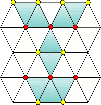

Chapter X
- 1キリアキ/Kyriaki
-
Information
- バイタル 99/99
- タイムリミット 5分
Guide
キリアキの基本的な攻略はギルス攻略：キリアキを参照。
このステージの特徴は、キリアキの裂傷生成頻度がかなり高いだけでなく、裂傷放置によるバイタル減少速度が大きいことにある。
キリアキ出現前の裂傷の時点でもバイタルはどんどん減少し、出血創を閉じるのに失敗でもしようものなら即座に手術失敗に終わってしまうだろう。
無事に初期裂傷の処理に成功するとキリアキが3体現れる。
裂傷を放置してもダメージ、裂傷に専念してもキリアキが即座に裂傷を生成してダメージ、と非常に辛い。
さらにキリアキを2体焼却すると、さらにキリアキが2体追加される。普通にやっているととてもじゃないが追いつかないだろう。
そこで、ゼリーを活用する。ゼリーを裂傷に塗ると止血効果、つまり放置によるダメージ減少を少しの間止められるので、行動の合間合間にゼリーを入れて、少しでもバイタルの減少を防ぎたい。もし、バイタルを回復したいなら、「ゼリー→注射→ゼリー→注射」のように行う。キリアキや裂傷の処理も同様だ。
処理の方針としては、裂傷をまとめて処理し、キリアキもまとめて処理する。一つ一つに専念せず、キリアキは2体同時に焼却。裂傷はとりあえず全部一気に縫合するなど。
とにかく無駄な行動を極力省けば徐々に正気は見えてくる。X1はマザー前の5体が一番辛く、マザーにさえ辿りつけば後は楽だ。キリアキの配置などある程度運も絡むので、諦めずに挑もう。
Special Bonus
条件 スコア 超執刀を使用しない 100 90秒以上残して手術終了 600 Miss判定無し 900 MAX CHAIN 60以上 400 Operation Rank
ランク スコア C ～8999 B 9000～9499 A 9500～10999 S 11000～11999 XS 12000～ for XS
スコアが足りなくなるので、マザーと子供を放置して裂傷で稼ごう。
Movie
- 2デフテラ/Deftera
-
Information
- バイタル 99/99
- タイムリミット 5分
Guide
デフテラの基本的な攻略はギルス攻略：デフテラを参照。
基本的に今までと変わらない。ダメージが大幅に増えているぐらいなので、血だまりに注意しながら腫瘍を最優先で処理していく。
Special Bonus
条件 スコア 超執刀を使用しない 100 90秒以上残して手術終了 500 Miss判定無し 900 MAX CHAIN 70以上 500 Operation Rank
ランク スコア C ～6799 B 6800～7199 A 7200～7499 S 7500～7799 XS 7800～ for XS
腫瘍のダメージが凄まじいので、とにかく死なないことを優先しよう。後はノーミスならXSが出るはず。
Movie
- 3テタルティ/Triti
-
Information
- バイタル 99/99
- タイムリミット 5分
Guide
テタルティの基本的な攻略はギルス攻略：テタルティを参照。
バイタル減少量が飛躍的に増加し、気化頻度が上昇。それ以外は変わらないので、確実に1ブロックずつ壊滅させていく。

赤い楔を全て抜けば、どの位置の膜を剥がしても増殖しない。
Special Bonus
条件 スコア 超執刀を使用しない 100 180秒以上残して手術終了 700 Miss判定無し 900 膜を6枚以上増殖させない 300 Operation Rank
ランク スコア C ～5599 B 5600～5899 A 5900～6199 S 6200～6399 XS 6400～ for XS
全く増殖をさせずにクリアするとスコアが足りないので、わざと楔の増殖を待って、ガスを吸ってスコアを稼ぐ。
Movie
- 4トリーティ/Tetarti
-
Information
- バイタル 99/99
- タイムリミット 5分
Guide
トリーティの基本的な攻略はギルス攻略：トリーティを参照。
3色の腫瘍の膨張速度がかなり早くなっている。初期状態の3つは、全てに血清を投与してから一気に切除は無理なので、一つ一つ処理する。
トリーティ自体は毒素によるバイタル減少量が増え、移動速度が速くなり、耐久度が上がっている。落ち着いて直線移動に入った時を狙って血清を打ち込もう。
7回ダメージを与えるとトリーティは消滅する。
Special Bonus
条件 スコア 超執刀を使用しない 100 60秒以上残して手術終了 900 MAX CHAIN 20以上 1000 Operation Rank
ランク スコア C ～5599 B 5600～5899 A 5900～6199 S 6200～6499 XS 6500～ for XS
条件にMissが入っていないので、CHAINにだけ気をつければよい。最初の3セットまでノーミスならXSが取れるだろう。
Movie
- 5ペンプティ/Pempti
-
Information
- バイタル 99/99
- タイムリミット 5分
- レーザーの耐久度が無限
Guide
ペンプティの基本的な攻略はギルス攻略：ペンプティを参照。
腫瘍や裂傷のダメージが増加し、ビットの射出間隔が短くなり、コアの耐久度が上がっている以外は特に変わらない。
Special Bonus
条件 スコア 超執刀を使用しない 100 120秒以上残して手術終了 800 Miss判定無し 900 MAX CHAIN 100以上 200 Operation Rank
ランク スコア C ～5499 B 5500～5999 A 6000～6299 S 6300～6399 XS 6400～ for XS
スコアが足りなくなる可能性があるので、余裕を見て裂傷ビットを逃がしておくとよい。
Movie
- 6パラスケヴィ/Paraskevi
-
Information
- バイタル 35/50
- タイムリミット 5分
Guide
パラスケヴィの基本的な攻略はギルス攻略：パラスケヴィを参照。
以前と比べると分割時のダメージが30に増えており、バイタルの最大値が50までしか無いので、非常に辛い戦いとなる。
分割したらすぐに縫合し、次の分割に備えて30以上まで回復しなければならない。また、潜ろうとする速度がかなり速いので、レーザーで止める余裕がなければ放置してもいいだろう。
とにかく慌てずに1匹ずつ処理することが重要。潜られても気にしない。
Special Bonus
条件 スコア 超執刀を使用しない 100 90秒以上残して手術終了 800 Miss判定無し 900 MAX CHAIN 50以上 200 Operation Rank
ランク スコア C ～9199 B 9200～9599 A 9600～9999 S 10000～10999 XS 11000～ for XS
患部移動回数が条件に入っていないので、ある程度潜られるのを無視して回復に徹するのが良い。縫合回数が限られているので、Cool判定を確実に出すこと。そうしないとスコアが足りなくなる。
Movie
- 7サヴァト/Savato
-
Information
- バイタル 99/99
- タイムリミット 10分
Guide
サヴァトの基本的な攻略はギルス攻略：サヴァトを参照。
基本的にストーリーラストのサヴァトとあまり変わらない。
Special Bonus
条件 スコア 90秒以上残して手術終了 500 Miss判定無し 1000 MAX CHAIN 200以上 500 Operation Rank
ランク スコア C ～18999 B 19000～20999 A 21000～24999 S 25000～26999 XS 27000～ for XS
やはり、普通にクリアしただけではスコアが足りなくなる。
月森の場合、3回目にコートを除去した後にメスを入れずにサヴァトを泳がせて、裂傷でスコアを稼ぐ。
ミラは以前と同じく、オート超執刀に入ったらひたすら縫合して稼ごう。
Movie
- » ギルス攻略